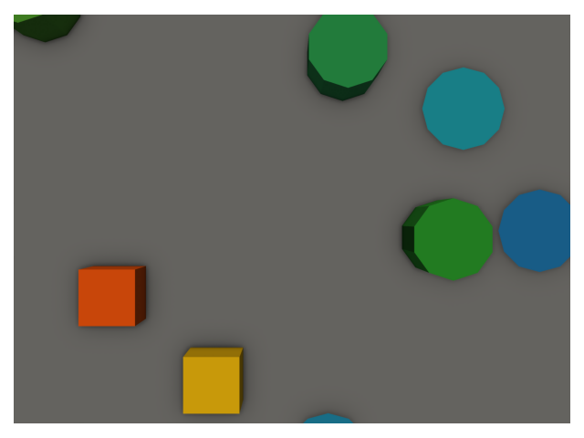

Conceptual workflow¶
Imagine you are trying to map the objects in a hypothetical region. Your world consists of three types of objects: cones, cubes, and cylinders. Cones are different shades of blue, cubes are difference shades of orange, and cylinders are different shades of green. Your landscape consists of a variety of these objects arranged randomly on a flat gray surface. You fly a drone survey and collect images of your scene, some of which are shown below.



While you are there, you also do some field work and survey a small subset of your region. Field work is labor-intensive, so you can't survey the entire region your drone flew. You note down the class of the object and their location and shape in geospatial coordinates. This results in the following geospatial map.

You use structure from motion to build a 3D model of your scene and also estimate the locations that each image was taken from.

Up to this point, you have been following a fairly standard workflow. A common practice at this point would be to generate a top-down, 2D orthomosaic of the scene and do any prediction tasks, such as deep learning model training or inference, using this data. Instead, you decide it's important to maintain the high quality of the raw images and be able to see the sides of your objects when you are generating predictions. This is where geograypher comes in.
Using your field reference map and the 3D model from photogrammetry, you determine which portions of your 3D scene correspond to each object. This is shown below, with the colors now representing the classification label.

Your end goal is to generate predictions on the entire region. For this, you need a machine learning model that can generate automatic predictions on your data. No one else has developed a model for your cone-cube-cylinder classification task, so you need to train your own using labeled example data. Using the mesh that is textured with the classification information from the field survey, and the pose of the camera, you can "render" the labels onto the images. They are shown below, color-coded by class.


These labels correspond to the images shown below.
Now that you have pairs of real images and rendered labels, you can train a machine learning model to predict the class of the objects from the images. This model can be now used to generate predictions on un-labeled images. An example prediction is shown below.


To make these predictions useful, you need the information in geospatial coordinates. We again use the mesh model as an intermediate step between the image coordinates and 2D geospatial coordinates. The predictions are projected or "splatted" onto the mesh from each viewpoint.


As seen above, each prediction only captures a small region of the mesh, and cannot make any predictions about parts of the object that were occluded in the original viewpoint. Therefore, we need to aggregate the predictions from all viewpoints to have an understanding of the entire scene. This gives us added robustness, because we can tolerate some prediction errors for a single viewpoint, by choosing the most common prediction across all viewpoints of a single location. The aggregated prediction is shown below.
Now, the final step is to transform these predictions back into geospatial coordinates.